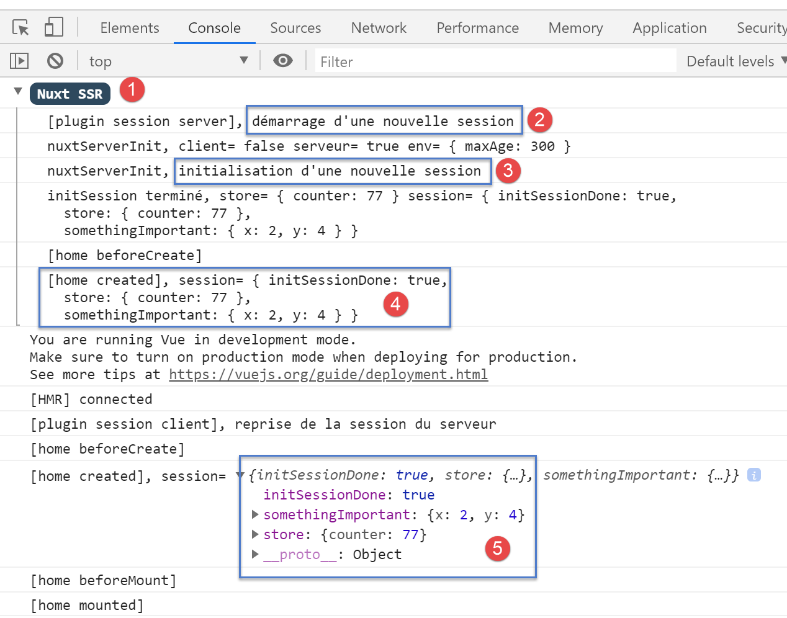
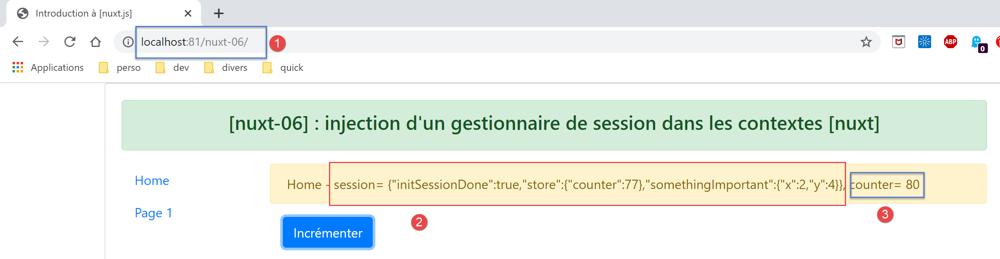

9. Example [nuxt-06]: injection within the context of a session manager
9.1. Overview
The example [nuxt-05] demonstrated that the store can be persisted even when the user forces calls to the server. Store elements are reactive so that if they are integrated into views, those views react to changes in the store. One may also wish to persist elements throughout client/server exchanges without wanting them to be reactive, simply because they are not displayed by views. These can then be stored in the session without necessarily being in the store.
The store is easily accessible through properties such as [context.app.$store] outside of views or [this.$store] within views. We would like something similar for the session, something like [context.app.$session] or [this.$session]. We will see that this is possible thanks to the concept of injection. However, we cannot inject objects into the context, only functions. This function will then be available through expressions such as [context.app.$session()] or [this.$session()].
Finally, we will present the concept [nuxt] of [plugin].
The example [nuxt-06] is initially obtained by copying the project [nuxt-05]:

- in [1], we will add a folder named [plugins];
9.2. the concept of a plugin [nuxt]
[nuxt] refers to [plugin] as any code executed at application startup, even before the server executes the [nuxtServerInit] function, which until now was the first user function to be executed. The application’s plugins must be declared in the [plugins] key of the [nuxt.config.js] configuration file:
/*
** Plugins to load before mounting the App
*/
plugins: [
{ src: '~/plugins/client/session', mode: 'client' },
{ src: '~/plugins/server/session', mode: 'server' }
],
- lines 5-6: a plugin is identified by its path [src] and its execution mode [mode]. [mode] can have three values:
- [client]: the plugin must be executed on the client side only;
- [server]: the plugin must be executed on the server side only;
- [mode] is missing: in this case, the plugin must be executed on both the client and server sides;
- Lines 5–6: We have placed our two plugins in a folder named [plugins]. This is not required. Plugins can be placed anywhere in the project directory structure. Similarly, the names of the subfolders [client, server] are arbitrary here;

9.3. The server plugin [session]
The [server / session.js] plugin is as follows:
/* eslint-disable no-console */
export default (context, inject) => {
// server session management
// is there an existing session?
let value = context.app.$cookies.get('session')
if (!value) {
// new session
console.log("[plugin session server], démarrage d'une nouvelle session")
value = initValue
} else {
// existing session
console.log("[plugin session server], reprise d'une session existante")
}
// session definition
const session = {
// session content
value,
// save the session in a cookie
save(context) {
context.app.$cookies.set('session', this.value, { path: context.base, maxAge: context.env.maxAge })
}
}
// we inject a function into [context, Vue] that will render the current session
inject('session', () => session)
}
// initial session value
const initValue = {
initSessionDone: false
}
- Line 2: Plugins are executed every time there is a server call: at startup and every time the user forces a server call by manually typing URL:
- first, the server plugin(s) is (are) executed;
- once the client browser has received the server’s response, it is the client plugin(s)’ turn to run;
- Line 2: Every plugin, whether client- or server-side, receives two parameters:
- [context]: the server or client context, depending on which is executing the plugin;
- [inject]: a function that allows a function to be injected into the server or client context;
- The purpose of the [server / session] plugin is twofold:
- to define a session (lines 16–23);
- to define, within the context, a function [$session] that will return the session from line 16 as its result. Line 25 does this;
- lines 16–23: the session will encapsulate its data in the [value] object on line 18;
- lines 20–22: it has a function [save] that receives a [context] object as a parameter. The calling code provides this context to it. Using this, the [save] function saves the session value, the [value] object, to the session cookie;
- line 6: when the [server / session] plugin runs, it first checks whether the server has received a session cookie;
- if so, the object [value] in line 6 represents the session value, i.e., all the data encapsulated within it;
- if not, lines 7–11 set the initial value of the session. This will be the [initValue] object in lines 29–31. The session elements will be defined in the [nuxtServerInit] function, which is executed after the server plugin;
- line 18: the notation [value] is a shorthand for the notation [value:value]. The [value] on the left is the name of an object key; the [value] on the right is the [value] object declared on line 6;
- line 25: when this line is reached, the session has either been created because it did not exist, or retrieved from the client browser’s HTTP request;
- line 25: a new function is injected into the server context:
- the first parameter of [inject] is the name of the function being created, here ‘session’. [nuxt] will actually give it the name ‘$session’;
- the second parameter is the function definition. Here, the function [$session]
- will not accept any parameters;
- will return the object [session] from line 16;
- once the plugin is executed:
- the function [$session] is available in [context.app.$session] where the object [context] is available, or [this.$session] in a view or in the [vuex] store;
- the function [$session] returns an object [session] with a unique key [value];
- Upon initial session creation, the [value] object has only one key, [initStoreDone] (lines 29–31). The key [initStoreDone:false] is used to indicate that the store has not yet been placed in the session. This will be done by the function [nuxtServerInit];
9.4. Session initialization
Once the [session / server] plugin has been executed by the server, the server will execute the following [store / index.js] script:
/* eslint-disable no-console */
export const state = () => ({
// meter
counter: 0
})
export const mutations = {
// increment counter by one [inc] value
increment(state, inc) {
state.counter += inc
},
// state replacement
replace(state, newState) {
for (const attr in newState) {
state[attr] = newState[attr]
}
}
}
export const actions = {
async nuxtServerInit(store, context) {
// who executes this code?
console.log('nuxtServerInit, client=', process.client, 'serveur=', process.server, 'env=', context.env)
// waiting for a promise to be fulfilled
await new Promise(function(resolve, reject) {
// this is normally an asynchronous function
// we simulate it with a one-second wait
setTimeout(() => {
// init session
initSession(store, context)
// success
resolve()
}, 1000)
})
}
}
function initSession(store, context) {
// store is the blind to be initialized
// retrieve the session
const session = context.app.$session()
// has the session already been initiated?
if (!session.value.initSessionDone) {
// start a new blind
console.log("nuxtServerInit, initialisation d'une nouvelle session")
// on initialise le store
store.commit('increment', 77)
// put the blind in the session
session.value.store = store.state
// on initialise une nouvelle session
session.value.somethingImportant = { x: 2, y: 4 }
// the session is now initialized
session.value.initSessionDone = true
} else {
console.log("nuxtServerInit, reprise d'un store existant")
// update the store with the session store
store.commit('replace', session.value.store)
}
// save the session
session.save(context)
// log
console.log('initSession terminé, store=', store.state, 'session=', session.value)
}
Compared to the store in the [nuxt-05] project, only the [initSession] function (formerly initStore) in lines 38–60 has changed:
- line 42: the session is retrieved using the [$session] function, which has been injected into the server context;
- line 44: we check if the session has already been initialized;
- lines 45–54: if not:
- line 48: the store is initialized;
- line 50: the store’s state is placed in the session;
- line 52: another [somethingImportant] object is added to the session. This one will not be part of the store;
- line 54: we note that the session is now initialized;
- lines 55–59: if the session was already initialized:
- line 58: the new store is initialized with the session’s contents;
- line 61: the session is saved in the session cookie. Note that this involves placing the cookie in the HTTP response that the server will send to the client browser;
9.5. The client's [client / session] plugin
Once the server has executed the scripts [plugins / server / session] and [store / index], it will send one of the pages [index, page1] to the client browser. The server’s HTTP response will contain the session cookie. Once the page is received by the client browser, the client-side scripts embedded in the page will execute. The [client / session] plugin will then run:
/* eslint-disable no-console */
export default (context, inject) => {
// customer session management
// the session necessarily exists, initialized by the server
console.log('[plugin session client], reprise de la session du serveur')
// session definition
const session = {
// session content
value: context.app.$cookies.get('session'),
// save the session in a cookie
save(context) {
context.app.$cookies.set('session', this.value, { path: context.base, maxAge: context.env.maxAge })
}
}
// we inject a function into [context, Vue] that will render the current session
inject('session', () => session)
}
- When the client plugin runs, the session cookie has already been received by the client browser;
- the goal of the [client] plugin is to also inject a function [$session] into the client context. This function would return the session sent by the server;
- line 19: the injected function [$session] will return the session from lines 9–16;
- lines 9–16: the [session] object managed by the client. This will be a copy of the session sent by the server;
- line 11: the value of the client session is taken from the session cookie sent by the server [nuxt];
- lines 13–15: as with the server session, the client session has a function [save] that saves the session value, [this.value] (line 14), in the session cookie stored in the browser;
9.6. The [index] page
The [index] page evolves as follows:
<!-- page [index] -->
<template>
<Layout :left="true" :right="true">
<!-- navigation -->
<Navigation slot="left" />
<!-- message-->
<template slot="right">
<b-alert show variant="warning"> Home - session= {{ jsonSession }}, counter= {{ $store.state.counter }} </b-alert>
<!-- button -->
<b-button @click="incrementCounter" class="ml-3" variant="primary">Incrémenter</b-button>
</template>
</Layout>
</template>
<script>
/* eslint-disable no-undef */
/* eslint-disable no-console */
/* eslint-disable nuxt/no-env-in-hooks */
import Layout from '@/components/layout'
import Navigation from '@/components/navigation'
export default {
name: 'Home',
// components used
components: {
Layout,
Navigation
},
computed: {
jsonSession() {
return JSON.stringify(this.$session().value)
}
},
// life cycle
beforeCreate() {
// client and server
console.log('[home beforeCreate]')
},
created() {
// client and server
console.log('[home created], session=', this.$session().value)
},
beforeMount() {
// customer only
console.log('[home beforeMount]')
},
mounted() {
// customer only
console.log('[home mounted]')
},
// event management
methods: {
incrementCounter() {
console.log('incrementCounter')
// counter increment of 1
this.$store.commit('increment', 1)
// session modification
const session = this.$session()
session.value.store = this.$store.state
session.value.somethingImportant.x++
session.value.somethingImportant.y++
// save session in session cookie
session.save(this.$nuxt.context)
}
}
}
</script>
Keep in mind that this page runs on both the server and the client.
- Line 8: We now display both the session and the store;
- line 30: [jsonSession] is a calculated property that returns the string jSON from the session value;
- line 41: the session value is displayed using the injected function [this.$session]. This function exists in both the server and client contexts;
- line 53: the method [incrementCounter] is executed only on the client side;
- line 56: the store counter is incremented and displayed as before;
- line 58: the session is retrieved using the injected function [this.$session];
- line 59: the session store is updated;
- lines 60–61: the session’s [somethingImportant.x, somethingImportant.y] attributes are incremented. This is just to show that a session can be used to carry something other than the store;
- line 63: the session is saved in the session cookie stored in the browser. From a client perspective, the session context is available in [this.$nuxt.context];
The purpose of the [index] page is to demonstrate that the session is not reactive, whereas the store is. When we increment the session elements, we will find that the view is not updated. The [page1] view presents a solution to this problem.
9.7. The [page1] page
The page [page1] is obtained by copying the page [index] and then modifying it slightly:
<!-- page [index] -->
<template>
<Layout :left="true" :right="true">
<!-- navigation -->
<Navigation slot="left" />
<!-- message-->
<template slot="right">
<b-alert show variant="warning"> Page1 - session= {{ jsonSession }}, counter= {{ $store.state.counter }} </b-alert>
<!-- button -->
<b-button @click="incrementCounter" class="ml-3" variant="primary">Incrémenter</b-button>
</template>
</Layout>
</template>
<script>
/* eslint-disable no-undef */
/* eslint-disable no-console */
/* eslint-disable nuxt/no-env-in-hooks */
import Layout from '@/components/layout'
import Navigation from '@/components/navigation'
export default {
name: 'Page1',
// components used
components: {
Layout,
Navigation
},
data() {
return {
session: {}
}
},
computed: {
jsonSession() {
return JSON.stringify(this.session.value)
}
},
// life cycle
beforeCreate() {
// client and server
console.log('[page1 beforeCreate]')
},
created() {
// client and server
// set the session in the page's reactive properties
this.session = this.$session()
// log
console.log('[page1 created], session=', this.session.value)
},
beforeMount() {
// customer only
console.log('[page1 beforeMount]')
},
mounted() {
// customer only
console.log('[page1 mounted]')
},
// event management
methods: {
incrementCounter() {
console.log('incrementCounter')
// counter increment of 1
this.$store.commit('increment', 1)
// session modification
this.session.value.store = this.$store.state
this.session.value.somethingImportant.x++
this.session.value.somethingImportant.y++
// save session in session cookie
this.session.save(this.$nuxt.context)
}
}
}
</script>
- line 47: the main difference is that we set the current session in the page properties (lines 29–33). This will cause the session to become reactive. When the [incrementCounter] function increments the session elements, the [page1] view will be updated;
9.8. Running the project
Before running the project, check your browser’s session cookie and, if it exists, delete it so that the server creates a new session:

Now let’s request URL and [http://localhost:81/nuxt-06/]:

The browser logs are then as follows:

- In [2], the server starts a new session in the server’s [session] plugin;
- in [3], this new session is initialized in [nuxtServerInit];
- in [4], the new session as it is known on the server;
- in [5], the client has successfully retrieved this session;
Now let’s increment the counter three times:

- in [3], the counter has indeed been incremented but not the session in [2]. While [3] displays the store, which is responsive, [2] displays the session, which is not responsive:
Now let’s reload the page (F5). The logs are as follows after this reload:

- In [2], we see that the server received a session cookie sent by the client browser;
- In [4], we see that the store is not reset but is carried over from the received session;
- in [4-5]: we see that all session attributes have indeed been incremented three times;
The page sent by the server is then as follows;

The conclusion drawn from this page is that the session can carry elements other than the store, but these are not reactive.
Now let’s click on the link [Page 1] [4]. The new page displayed is then as follows:

Then let’s click the [Incrémenter] button three times. The page changes to the following:

This time, the session is displayed correctly in [2]. It is interactive here. This can be seen in the logs:

- in [1-3], the session values;
- in [4-6], the reactive getters and setters for the session elements;
Now let’s click on the link [Home] [4]. We get the following page:

Then double-click the [Incrémenter] [4] button. The page changes to the following:

We can see that here too, the session has become active: [2].
Let’s retrieve the value returned by the [this.$session()] function:

- In the [Vue] tab, select the current page [Home] to obtain its reference [$vm0] [3];
Then, in the [Console] [4] tab, retrieve the value of the [$vm0.$session()] function:

- In [5], we see that the session has become active, whereas it was not initially;
- In [6], we request the session value;
- In [7-8], we find that this value has also become reactive;
We therefore have an unexpected result here: if an element becomes reactive on a page because it has been placed in the page’s properties, then it also becomes reactive on pages where it is not part of the properties.
9.9. Conclusion
The example [nuxt-05] showed that the store could be persisted across requests made to the server. The example [nuxt-06] does the same thing with an object we named [session] by analogy with the web session. We saw that this session could have the same properties as the [Vuex] store and become reactive as well, even though it was not native.
So what is the point of the store [Vuex]? I must admit that, for now, it hasn’t occurred to me. It’s likely that I’ve missed something. So, when in doubt, I would recommend using:
- a [Vuex] store to hold everything that needs to be shared between client pages, and anything that may need to be shared between the client and the server;
- a session cookie if the store needs to be persisted during a client-to-server call, with the session containing only the store;
The examples [nuxt-05] and [nuxt-06] were intended to show how to ensure application continuity when the user forces a call to the server by manually entering URL. Note that the default behavior in this case is to restart the application, causing its current state to be lost.